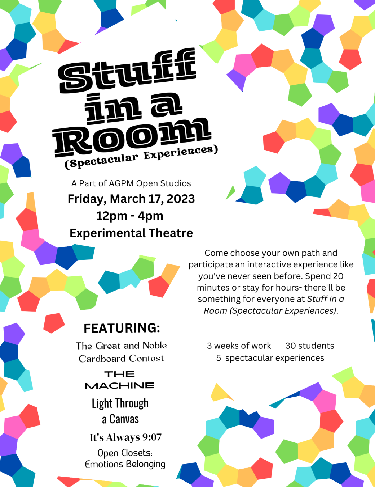
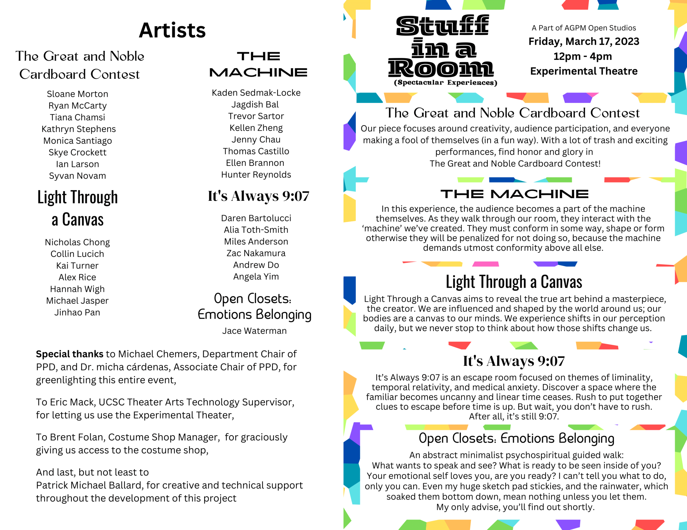
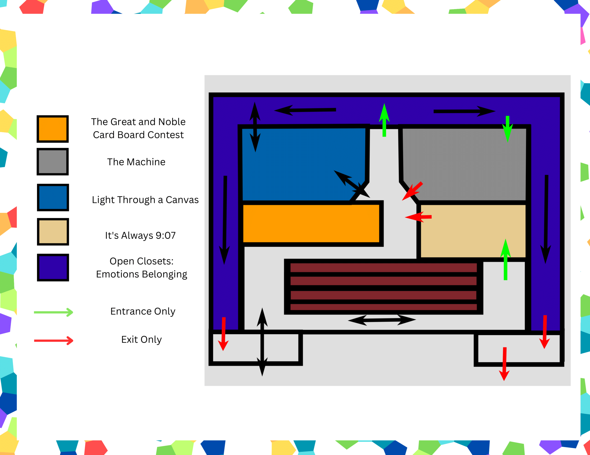

Stuff in a Room (Spectacular Experiences)
Feb. 14th - Mar. 17th, 2023
This interactive experience was the culmination of 3 weeks of work,
30 artists and 1 instructor. It debuted for one day only and was taken down
immediately after, but the experience still resonates with me today.
It featured 5 different experiences, each made by
a different sub-group of the collective.
I mainly participated in the group It's Always 9:07. Our experience
was an escape room with a focus on liminality. It was set in a waiting room
and participants would have to solve puzzles in order to open a box, the
contents of which are not stated.
The summary of my group's experience written for the event was as follows:
"It's Always 9:07 is an escape room focused on themes of liminality, temporal relativity,
and medical anxiety. Discover a space where the familiar becomes uncanny and linear time
ceases. Rush to put together clues to escape before time is up. But wait, you don't have to rush.
After all it's still 9:07."
I also designed the poster and program for the event.
Credits:
Instructor: Patrick Michael Ballard
The Great and Noble Cardboard Contest:
Sloane Morton
Ryan McCarty
Tiana Chamsi
Kathryn Stephens
Monica Santiago
Skye Crockett
Ian Larson
Syvan Novam
Light Through a Canvas
Nicholas Chong
Collin Lucich
Kai Turner
Alex Rice
Hannah Wigh
Michael Jasper
Jinhao Pan
The Machine
Kaden Sedmak-Locke
Jagdish Bal
Trevor Sartor
Kellen Zheng
Jenny Chau
Thomas Castillo
Ellen Brannon
Hunter Reynolds
It's Always 9:07
Daren Bartolucci
Alia Toth-Smith
Miles Anderson
Zac Nakamura
Andrew Do
Angela Yim
Open Closets: Emotions Belonging
Jace Waterman
Made for ARTG 134 at UCSC
|  |
|
|
|  |
|
|
|  |